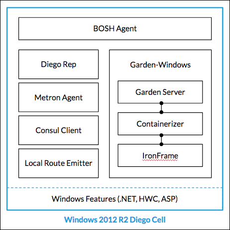

Understanding Windows Cells
This topic provides a description of how Windows cells work in Pivotal Cloud Foundry (PCF). For more information about security, see the Understanding Stemcell Security topic.
Overview
App instances in PCF run inside containers. Garden is the API that creates and manages these containers, and Garden Windows implements Garden on Windows.
By deploying the PAS for Windows 2012R2 tile, operators create a Windows cell from a stemcell that contains the Windows Server 2012 operating system. Because Windows does not natively support Linux-style containers, Garden Windows uses an open-source library called IronFrame to implement containerization on Windows. IronFrame uses features of the Windows kernel to isolate resources that would otherwise be shared, creating containers comparable to those that exist on Linux.
A Windows cell includes the following components:
- Garden Windows: Implements the Garden API on Windows
- Containerizer: Creates and manages Windows containers, using the IronFrame library
- Metron Agent: Forwards app logs, errors, and metrics to the Loggregator system
- BOSH Agent: Executes instructions from the BOSH Director
- Consul Client: Registers the cell as a service in a Consul cluster
- Cell Rep: Runs and manages Tasks and Long Running Processes
The following diagram illustrates the architecture of a Windows cell:

Garden Windows achieves container isolation in the following ways:
Filesystem Isolation
Garden Windows creates a unique temporary user for each container, and uses Access Control Lists (ACLs) to render a “containerized” directory visible only to the user who owns the container. The temporary user can also read much of the host cell’s filesystem, such as system DLLs and C:\Program Files.
Note: Because the temporary user who owns the container can view much of the host filesystem, operators should avoid placing sensitive or confidential information in system directories that would be accessible by standard users on a Windows workstation.
Disk Usage
Garden Windows enforces disk usage limits with NTFS disk quotas, which work on a per-user, per-volume basis. The disk quotas apply to the temporary user who owns the container, on the volume that contains the containerized directory, which is C:\ by default. Because quotas are transparent to the user, the temporary user who owns the container can only see the disk resources available within the assigned quota.
Network Isolation
Apps launched inside a Garden Windows container bind directly to the external IP address of the cell. For apps that utilize the port mapping functions of the Garden API, Garden Windows maps internal container ports to external ports.
Memory Usage
Garden Windows uses job objects to enforce limits on memory usage by an app inside a container. A job object is a Windows kernel object that enables the control of multiple processes as a single group. Garden Windows assigns the processes inside a container to a job object and sets an upper limit on memory utilization by this job object, which is enforced by the kernel.
Additionally, an IronFrame component called the Guard helps enforce memory limits. The Guard polls for app memory usage and ensures that no app has mapped more memory than allowed. If an app exceeds its memory limit, the Guard kills the job object. If a process attempts to escape a job object, the Guard stops this behavior and kills the process if necessary.
Container Shutdown
When the Garden Windows server directs a PAS for Windows 2012R2 cell to shut down one of its containers, the cell destroys the container as follows:
Runs the
TerminateProcesskernel32 syscall recursively, to terminate container child processes and finally the parent process.Stops the container Guard process.
Releases ports allocated to the container.
Deletes firewall rules for NetOut.
For mounted directories bound to the container:
- Deletes local symlinks.
- On the directory source VM, deletes access control lists (ACLs) for the container user.
Deletes the container user disk quota and container directory on the cell.
Deletes the container user account on the cell.
Due to a known limitation of the IronFrame containerization framework, terminating processes with the TerminateProcess kernel32 syscall may leave behind ghost connections and pending transactions that put the app in an inconsistent state. See the Knowledge Base for more information on how .NET apps shut down on PCF Windows cells.
Shutdown requests can come from cf delete or cf scale commands, or from the Diego system balancing apps.